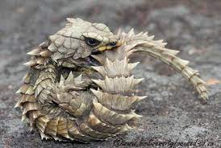

Lagarto Armadillo

Tienen un color marrón amarillento y se encuentran en afloramientos rocosos con grietas y matorrales, en hábitats desérticos o semidesérticos, viven en grupos familiares y poseen cuidados parentales, su dieta se forma principalmente a base de insectos y arañas, pudiendo servir de alimento a aves rapaces, pueden vivir unos 25 años en cautiverio.
Es un lagarto terrestre de la familia Cordylidae que vive en Sudáfrica.
Es un reptil pequeño, que mide entre 15 y 20 cm, pero los machos son un poco más grandes.
Sus patas son robustas, las delanteras son cortas y tienen dedos pequeños, y las traseras son un poco más largas y tienen dedos considerablemente largos.
Posee una cabeza aplanada y de un tamaño medio.
El color de este lagarto puede ser marrón o amarillento. Tiene el vientre amarillo y los ojos negros.
Pagina Principal